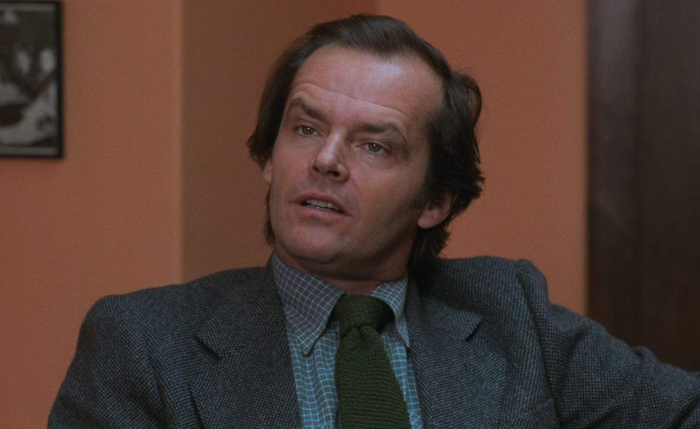
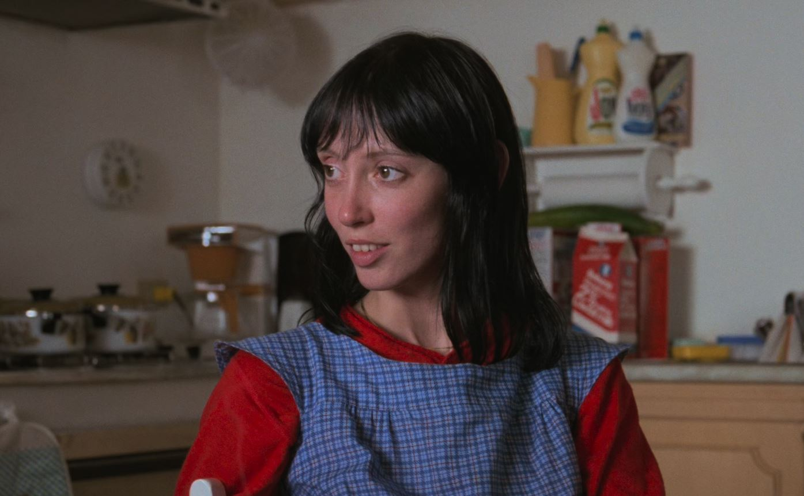
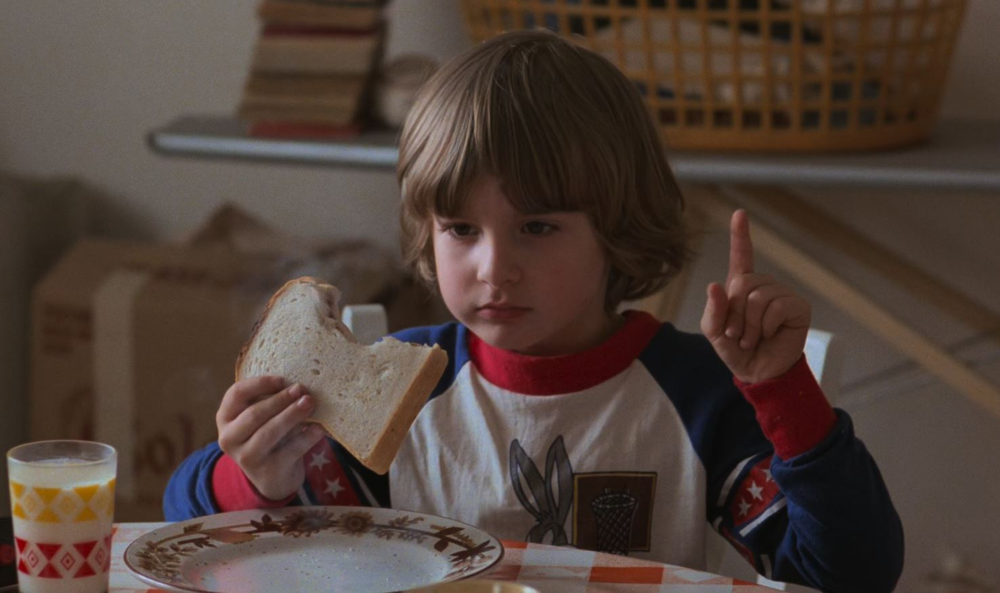
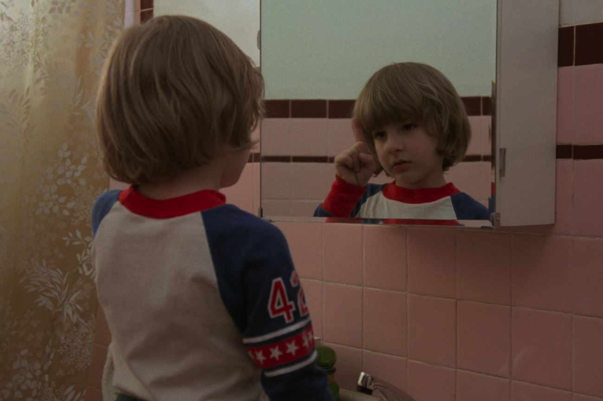
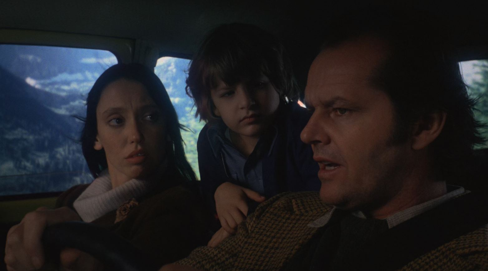
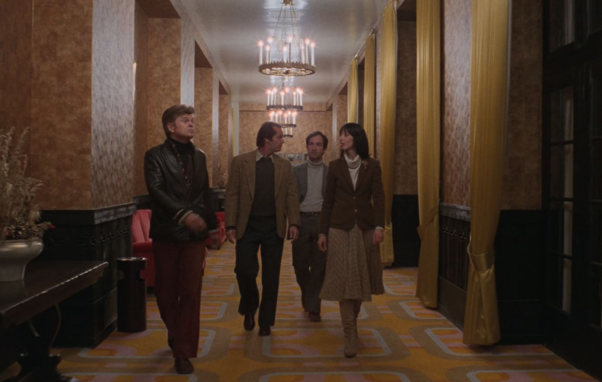
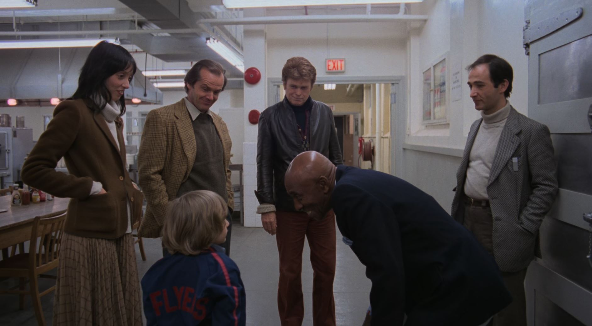
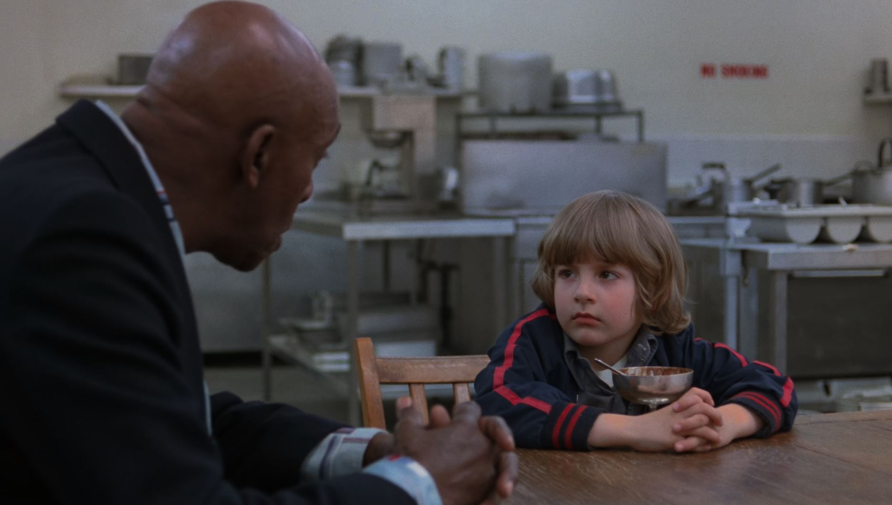
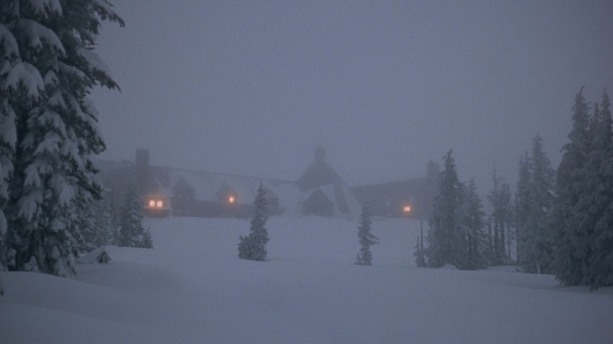

Fig. 1. The Overlook Hotel
Built in 1907, the posh, grand and secluded Overlook Hotel, located in the mountains of Colorado, closes for the winter months as it was never designed as a ski resort, that seclusion and isolation which has always been its attraction for its upscale guests and which makes it largely inaccessible in the snowy winter.

Fig. 2.
Jack Torrance

Fig. 3.
Wendy Torrance

Fig. 4.
Danny Torrance
Having recently moved from Vermont to Boulder with his wife Wendy and their adolescent son Danny, former schoolteacher Jack Torrance has just accepted the five month job as the Overlook's winter caretaker in wanting uninterrupted solitude to start his new career as a writer. In accepting the job, Jack was not deterred in knowing of the incident ten years ago when the then hotel GM Charles Grady, acting as that season's winter caretaker, developed a severe case of cabin fever and ended up gruesomely killing his wife and two daughters before killing himself.

Fig. 5.
Tony
Beyond a recent undiagnosed collapse experienced by Danny which may be an issue if it happens again at the hotel, Wendy is looking forward to this five month getaway. While Danny indirectly states he doesn't want to go, Wendy is not concerned about his emotional well being in this new situation as he, out of circumstance, has often been on his own without other children around, which has long ago led to him creating an imaginary friend named Tony who lives in Danny's mouth.

Fig. 6.
On the road.

Fig. 7.
Tour of the hotel.

Fig. 8.
Tour of the hotel continue.

Fig. 9.
Shine and melting icecreams.
When the Torrances arrive at the Overlook on October 30th, its last day of operation before they take over for the winter, Danny learns that there is someone at the hotel who knows his secret abilities in association to Tony's true nature.

Fig. 10.
Winter isolation
After the regular staff leaves for the winter and as winter truly sets in, the isolation of the resort begins to show itself. The question becomes which of the often battling powers in this isolation will ultimately come out on top: Wendy's mortal fortitude, Danny's secret ability which he learns is called the shining, or the hotel's associated secrets which are slowly overtaking Jack.
*summary made by Huggo and posted on IMDb.